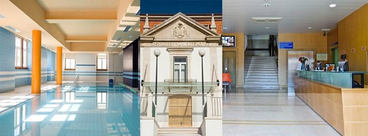

Algumas notas históricas
A Irmandade da Santa Casa da Misericórdia de Leiria foi criada em 1544. Neste mesmo ano, foi instituído o seu primeiro hospital, situado no centro da cidade, com lotação de 12 camas. Em 1610, veio a absorver os hospitais das profissões e as albergarias existentes, à data, na cidade e que tinham sido criadas e mantidas pelos “homens bons” para receber e assistir os doentes, agasalhar os peregrinos e dar de comer aos pobres. Algumas destas instituições datavam de 1222.
Das normas e circunstâncias em que fora criada a Irmandade da Misericórdia de Leiria pouco se conhece, porque todo o seu arquivo foi queimado, aquando das invasões francesas, no Século XIX. Era prescrição do Compromisso que a Provedoria fosse ocupada e exercida pelo Bispo da Diocese. Assim se procedeu durante longo tempo. Em 1790, D. Manuel de Aguiar foi nomeado Bispo da Diocese de Leiria e, consequentemente, ficou Provedor da Misericórdia. Foi um dos maiores, senão o maior, responsável por esta instituição.
Desde logo, a grandeza e bondade do seu espírito não se compadeceu com a localização, eficiência e exiguidade do Hospital da Misericórdia. De imediato pensou e decidiu construir um novo hospital em lugar apropriado e que fosse capaz de corresponder às necessidades do seu tempo e de mais adiante. Em 1798 deu início à construção do novo hospital no Bairro dos Anjos, onde se situava a capela de Nossa Senhora dos Anjos que, por isso, fora demolida. Em 1800 o Hospital estava concluído e recebia os doentes transferidos do primeiro hospital que depois viria a ser alienado. Após a implantação da República, o Hospital recebeu o nome do seu fundador, Dom Manuel de Aguiar, denominação que ainda hoje conserva. Ficou a ser o único hospital de Leiria e nele foram ministrados os cuidados hospitalares de saúde aos habitantes dos concelhos de Leiria, Marinha Grande, Batalha e Porto de Mós e, de forma suplementar, de Alcobaça e Pombal.
Até 1975, o Hospital Dom Manuel de Aguiar foi dirigido e administrado pela Santa Casa da Misericórdia de Leiria. Com a nacionalização dos hospitais e assistência hospitalar passou a ser gerido pela administração do Estado, como Hospital Distrital de Leiria, ficando o imóvel propriedade da Misericórdia. A sua lotação era, à data da transferência, de 113 camas para os internamentos dos serviços de medicina, cirurgia geral e especialidades de ortopedia, obstetrícia, otorrinolaringologia e oftalmologia. Ali funcionavam ainda os serviços de urgência, consultas externas, radiologia, análises clínicas e hematologia. A Misericórdia e Leiria, que sempre e só exerceu a prestação de cuidados hospitalares de saúde, uma vez espoliada do seu hospital e meios de acção, ficou sem actividade. Para guardar o seu arquivo e reinstalar a administração, viu-se na necessidade de arrendar uma pequena sala nas dependências da Sé Catedral de Leiria. As reuniões da Irmandade eram realizadas na Sacristia da Igreja da Misericórdia, sua propriedade, cuja reconstrução data do princípio do século XVIII.
Materialmente destroçada mas de espírito vivo e aguerrido, porque o amor não morre, antes se intensifica e robustece na luta, a Misericórdia logo decidiu continuar a sua acção benéfica na área da segurança social assistindo aos idosos, carência muito sentida na zona de Leiria. Por isso, concluídos os estudos e acções preliminares, em 1983 arrancou com a construção dum lar para idosos, em terreno seu, situado na cidade no sopé do monte de Nossa Senhora da Encarnação. Toda a construção e apetrechamento foi encargo exclusivo da Misericórdia sem qualquer participação ou ajuda das entidades estatais unicamente porque o plano em vista excedia em qualidade as características legais vigentes. Isto fez com que a conclusão da obra fosse mais difícil e retardada. Posteriormente, a Misericórdia alarga a sua acção ao domicílio com a assistência domiciliária.
